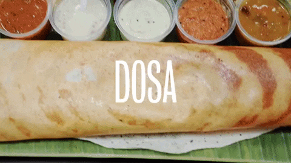

Dosa is love

A popular South Indian dish, dosa is a delicious comfort food that you can eat in any given course of food.
It is light on the stomach, easy and quick to cook. Though its origin lies in Udupi, Karnataka but it is
loved and savored all over the country and across the world as well. Dosa has had many variations over
time but the most popular remains the plain dosa and masala dosa. You can have dosa for breakfast, brunch,
lunch or even dinner since it is easily digestible, low on calories and extremely appetizing!
Details
- Prep Time: 7-8 hours
- Cook time: 26-30 mins
- Serve: 4
- Level of cooking: Moderate
- Taste: Mild
Ingredients for masala Dosa
- 2 cups rice
- 1/2 cup black gram
- 1/2 tsp fenugreek seeds
- 2 tsp salt
- Oil
- 500 grams potatos
- 1 1/2 cups onions, sliced
- 2 green chillies
- 1 tsp mustard seeds
- 6-7 curry leaves
- 1/4 tsp turmeric, powdered
- 1/2 cup water
Masala Dosa Recipe
- Wash and soak the rice in one container and the dal and fenugreek seeds together in another container for 5-6 hours or over night, depending on the weather
- Grind dal mixture together to a very smooth consistency. Next grind the rice smooth too and mix the two batters.
- Add salt and enough water to make into a dropping consistency. Leave to ferment over-night or more depending on the weather, till a little spongy.
- If thickened too much, add a little water to thin a bit. Heat tawa, and brush oil over it. When really hot, splash a little warer over it, and immediately pour batter onto it, spreading it thin, with a circular motion./li>
- This will have to be very swift and will need a bit of practice.
- After spreading the batter, lower the heat and dribble a little oil around the edges so that it seeps ub=nder the dosa.
- When the edges starts browning a bit, pass a flat spoon under it to ease the dosa off the pan. Put desired filling in the center and fold the two edges over.
- Serve accompanied with sambhar and coconut chutney.
Prepare the Masala filling
- Heat the oil in a heavy based pan and add the mustard seeds, then onions, curry leaves and green chillies, and saute over high heat till the onions are a little transparent.
- Add the salt and the turmeric and mix well, before adding the potatos.
- Turn the potatoes around till well mixed, and add the water, and let it simmer, for 2-3 minutes.
Nutrition Info
- Calories: 3534 Kcal
- Carbohydrates: 676.1 gm
- Protein: 103.5 gm
- Fat: 46.2 gm
- Other: 0